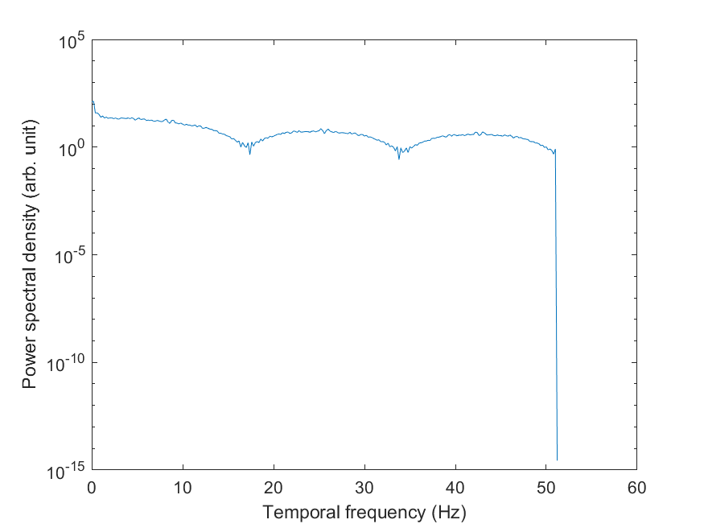
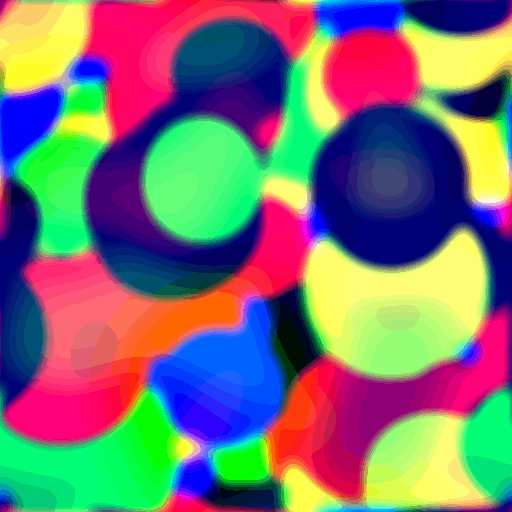
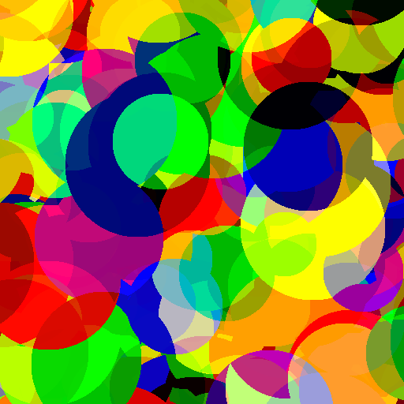

CFSCrafter#
CFSCrafter provides partial functionality described in Wang et al. (2022).
Please consider citing the original paper if you use this code.
Currently available functionality is:
Generation of mondrian or noise masks.
Spatial and temporal spectral analyses.
Spatial, temporal and orientational filters as well as phase scrambling.
You need MATLAB’s Image Processing Toolbox for the CFSCrafter to work.
How to use#
Initialize CFSCrafter object#
Provide here your experimental setup. If you have already generated masks you can provide a path to them using the path_to_masks argument. If you have a CFS-crafter .mat file you can provide a path to it as well.
You can find out your screen’s width and height in centimeters by using CFSVM.Utils.display_diag2aspects() function, which takes display diagonal in inches and aspect ratio (you can find these by searching your display’s model in Google). E.g., for 27” 16:9 display, [w, h] = CFSVM.Utils.display_diag2aspects(27, 16, 9) will return w=59.7727 and h=33.6221.
crafter = CFSVM.Generators.CFSCrafter( ... % path_to_masks='./masks/', ...
display_refresh_rate=60, ...
masks_update_rate=10, ...
screen_width_cm=59.77, ...
screen_width_pixel=1920, ...
screen_height_cm=33.62, ...
screen_height_pixel=1080, ...
viewing_distance_cm=45);
Generate new masks (mondrians or noise)#
Mondrians#
crafter.generate_mondrians( ...
[512, 512], ... % Resolution in pixels.
5, ... % Duration in seconds.
pattern_shape='circle', ... % 'square', 'circle' or 'diamond'
is_colored=true, ... % Whether rgb or gray.
is_noise_fill=false, ... % Whether to fill with noise. If true is_colored is ignored.
is_pink=false) % Whether pink or white noise if is_noise_fill is true.
Noise#
crafter.generate_noise( ...
[512, 512], ... % Resolution in pixels.
5, ... % Duration in seconds.
is_pink=false) % Whether pink or white noise.
Play masks#
You can check how your masks look by running the code below.
crafter.play()
Analyze masks#
Spatial spectrum#
Radially averaged power spectral density of pixel intensities per cycles per degree of visual angle.
[freqs, psds] = crafter.spatial_spectrum();
semilogy(freqs, psds)
xlabel('Spatial frequency (cycles per degree)')
ylabel('Power spectral density (arb. unit)')

Temporal spectrum#
Power spectral density of pixel intensities per Hz.
[freqs, psds] = crafter.temporal_spectrum();
semilogy(freqs, psds)
xlabel('Temporal frequency (Hz)')
ylabel('Power spectral density (arb. unit)')

Filter masks#
Spatial#
For the low-pass filter, you can either set l_freq=[] or remove l_freq argument.
For the high-pass filter, you can either set h_freq=[] or remove h_freq argument.
crafter.spatial_filter(l_freq=1, h_freq=10);
Temporal#
For the low-pass filter, you can either set l_freq=[] or remove l_freq** argument.
For the high-pass filter, you can either set h_freq=[] or remove h_freq argument.
crafter.temporal_filter(l_freq=0.5, h_freq=2);
Orientation#
Direction of Gaussian filter defined by orientation in degrees. The width of the filter is defined by sigma in degrees.
crafter.orientation_filter(orientation=45, sigma=10);
Phase scrambling#
Proportion of phase scrambling is defined by phase_scramble_index. l_freq and h_freq define the frequency band to phase-scramble. If left or set to l_freq=[], h_freq=[] all frequencies will be phase-scrambled.
crafter.phase_scramble(phase_scramble_index=1, l_freq=1, h_freq=10);
Save masks#
Save as CFS-crafter file.
crafter.save('./masks.mat')
Masks patterns gallery#
Mondrians
Square grayscale |
Pink-noise-filled circle |
Colored diamond |
|---|---|---|
|
|
|


Noise
White noise |
Pink noise |
|---|---|
|
|


Filters gallery#
Spatial filter#
|
|
|
|---|---|---|
 |
|
|


Temporal filter#
|
|
|
|---|---|---|
|
 |
|


Orientation filter#
|
|
|
|---|---|---|
|
|
|


Phase scramble#
|
|
|
|---|---|---|
|
|
|